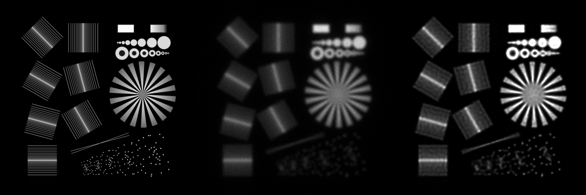

DeconvOptim.jl
A framework for deconvolution of images convolved with a Point Spread Function (PSF).
Overview
In optics, especially in microscopy, measurements are done with lenses. These lenses support only certain frequencies and weaken the contrast of high frequency content. Furthermore, in many cases Poisson or Gaussian noise is introduced by the quantum nature of light (Poisson shot noise) or sensors (readout noise). DeconvOptim.jl is a Julia solution to deconvolution reducing the blur of lenses and denoising the image. Our framework relies on several other tools: The deconvolution problem is stated as a convex optimization problem via a loss function. Hence we make use of Optim.jl and especially fast solvers like L-BFGS. Since such solvers require gradients (of the loss function) we use automatic differentiation (AD) offered by Zygote.jl for that. Of course, one could derive the gradient by hand, however that's error-prone and for some regularizers hard to do by hand. Furthermore, fast AD of the regularizers is hard to achieve if the gradients are written with for loops. Fortunately Tullio.jl provides an extensive and fast framework to get expressions which can derived by the AD in acceptable speed.
Installation
To get the latest stable release of DeconvOptim.jl type ] in the Julia REPL:
] add DeconvOptimQuick Example
Below is a quick example how to deconvolve a image which is blurred with a Gaussian Kernel.
using DeconvOptim, TestImages, Colors, ImageIO, Noise, ImageShow
# load test image
img = Float32.(testimage("resolution_test_512"))
# generate simple Point Spread Function of aperture radius 30
psf = Float32.(generate_psf(size(img), 30))
# create a blurred, noisy version of that image
img_b = conv(img, psf)
img_n = poisson(img_b, 300)
# deconvolve 2D with default options
@time res, o = deconvolution(img_n, psf)
# deconvolve 2D with no regularizer
@time res_no_reg, o = deconvolution(img_n, psf, regularizer=nothing)
# show final results next to original and blurred version
Gray.([img img_n res])Left image is the sample. In the middle we display the the noisy and blurred version captured with an optical system. The right image is the deconvolved image with default options. 